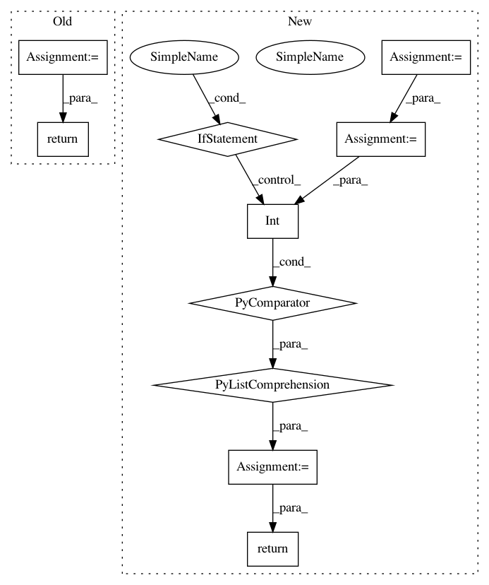

687e31d276db17b4ac7bea08b01c1e5401168ca9,tensorflow_transform/tf_metadata/metadata_io.py,,_column_schema_from_json,#Any#,64
Before Change
default_value = tf_options["fixedLenFeature"]["floatDefaultValue"]
except KeyError:
pass
representation = sch.FixedColumnRepresentation(default_value)
elif tf_options.get("varLenFeature") is not None:
representation = sch.ListColumnRepresentation()
else:
raise ValueError("Could not interpret tfOptions: {}".format(tf_options))
return sch.ColumnSchema(domain, axes, representation)
def _sparse_column_schema_from_json(feature_dict):
Translate a JSON sparse feature dict into a ColumnSchema.
After Change
default_value = tf_options["fixedLenFeature"]["floatDefaultValue"]
except KeyError:
pass
axes = feature_dict["fixedShape"].get("axis", [])
shape = [int(axis["size"]) for axis in axes]
return tf.FixedLenFeature(shape, dtype, default_value)
elif tf_options.get("varLenFeature") is not None:
return tf.VarLenFeature(dtype)
else:
raise ValueError("Could not interpret tfOptions: {}".format(tf_options))
In pattern: SUPERPATTERN
Frequency: 3
Non-data size: 10
Instances
Project Name: tensorflow/transform
Commit Name: 687e31d276db17b4ac7bea08b01c1e5401168ca9
Time: 2019-01-23
Author: tf-transform-dev@google.com
File Name: tensorflow_transform/tf_metadata/metadata_io.py
Class Name:
Method Name: _column_schema_from_json
Project Name: IndicoDataSolutions/finetune
Commit Name: 04573605a3bef45d29d81302bce154f220bbd7f5
Time: 2019-01-15
Author: matthew.bayer@indico.io
File Name: finetune/target_encoders.py
Class Name: OrdinalRegressionEncoder
Method Name: rank_to_thresholds
Project Name: dask/distributed
Commit Name: 6efd5b6147d29ec613bd83c72cdbd6a5a45a1438
Time: 2020-10-06
Author: jacobtomlinson@users.noreply.github.com
File Name: distributed/diagnostics/nvml.py
Class Name:
Method Name: _pynvml_handles